<html><head><title>Anatomy</title><style>body{font-family:sans-serif;padding:20px;background:#f4f4f9}.chapter{background:white;padding:20px;margin-bottom:30px}.q{border-bottom:1px solid #ddd;padding:15px}.correct{background:#d4edda}</style></head><body><h1>Anatomy</h1><div class='chapter'><h2>Heart</h2><div class='q'><p><b>Q31:</b>              .                  ? Answer Key Question No. Correct Option 676 Detailed Explanations                 ? </p><br><div class=''>a)     </div><div class=''>b) ê    </div><div class=''>c) Å     </div><div class='correct'>d)    </div><p><i>                       Åç . 701        ...</i></p></div><div class='q'><p><b>Q32:</b>           ________ </p><div class=''>a) Œ- </div><div class='correct'>b) Œ- ‹</div><div class=''>c) - —</div><div class=''>d) Œ-‹</div><p><i>            Œ- ‹.                 ...</i></p></div><div class='q'><p><b>Q33:</b>         ? Answer Key Question No. Correct Option 824 Detailed Explanations </p><div class='correct'>a)        </div><div class=''>b)        </div><div class=''>c)         </div><div class=''>d) è        </div><p><i>                     ‡           ...</i></p></div></div><div class='chapter'><h2>Bones, Joints and Cartilage</h2><div class='q'><p><b>Q21:</b>   ‚‡- -                     . Å-    -               Ž                 .                                ?                         ?       ______ Answer Key Question No. Correct Option 117 Detailed Explanations                ?             . 268  Å                    ˆ: d) Answer Key Question No. Correct Option 312 Detailed Explanations  ƒ - -   Å    Å         Å      Å       .         Å    ?  „              ______    …   .   …–- -         ‚        . ç         Š,     -      .           ê   :  ˆ           Å    .  “-  ,             .          ?                    ? 672                   ?         •           ? d) Answer Key Question No. Correct Option 776 Detailed Explanations                -                 .        :                    ?  †              __________.  †             ,         ‰  '  ? 948                         ?            ‡    ?      ‡      ‡  ? 1093 Answer Key Question No. Correct Option Detailed Explanations     Å       ƒ? </p><br><br><br><br><br><br><div class=''>a) „    </div><div class=''>b) ‹ </div><div class='correct'>c) ‹ </div><div class=''>d) • </div><p><i>                             ....</i></p></div><div class='q'><p><b>Q22:</b>             :                  ?            ƒ          ƒ   ? 185                              ,   : Answer Key Question No. Correct Option 269 Detailed Explanations       Å                ‚'  ?                       .      ? 531   ‡’-                   ,               .          ê   ?  ˆ                   Å  ,  : Answer Key Question No. Correct Option 625 Detailed Explanations                     ?  711 †         :  Å      “Å,                 -          .               ?   ‰--            .               .                 .                  ?                       ?                     ?  978          ê         ? Answer Key Question No. Correct Option Detailed Explanations 979                             ? 1066      ƒ    ? </p>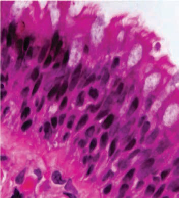<br>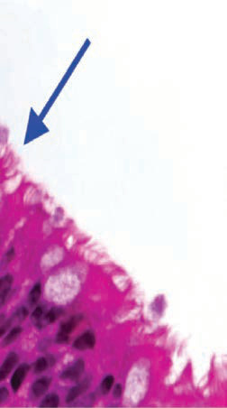<br>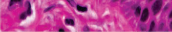<br><br><div class=''>a) ‹  </div><div class=''>b) Œ   </div><div class='correct'>c) Ž  </div><div class=''>d) ‹ </div><p><i>                 .         ...</i></p></div><div class='q'><p><b>Q23:</b>        “‚”  “ƒ”              _______  _______,   . 69                   (†)? 93                     ƒ  ?  …   Å              .                  ?                              ? 563                  ‡        ‡            ?                ? Answer Key Question No. Correct Option 712 Detailed Explanations                          ? 821  –                ? 851 Answer Key Question No. Correct Option Detailed Explanations             ? 921 Answer Key Question No. Correct Option 922 Detailed Explanations                    ?             : Answer Key Question No. Correct Option 1067 Detailed Explanations     Å       ƒ Å          ? </p><br><br><div class=''>a) ‹  ƒ</div><div class=''>b) „  ƒ</div><div class=''>c) ‹   ƒ</div><div class='correct'>d) „   ƒ</div><p><i>      “‚”         "ƒ"            ...</i></p></div><div class='q'><p><b>Q24:</b>                      ? Answer Key Question No. Correct Option 70 Detailed Explanations                 ,           .  ‚ ‹‹‹   ‚ ‹          ______.       Å         Å? 480  „                      : 532 Answer Key Question No. Correct Option Detailed Explanations  Å                Answer Key Question No. Correct Option 564 Detailed Explanations                     ? 673         “Å           ,                   .                         ?                       ‹ '  ?     Å ƒ  Å   -- ƒ? </p><br><div class=''>a) ‹ </div><div class='correct'>b) • </div><div class=''>c) ‡ ƒ</div><div class=''>d) Š ƒ</div><p><i>                      . è    ...</i></p></div><div class='q'><p><b>Q25:</b>   ’--         è‹…„                . …  ê-                        .                            ? Answer Key Question No. Correct Option 94 Detailed Explanations                        ?  ƒ                    .       Å?   “--       ‡            .                ?                    ?                  ? 949 Answer Key Question No. Correct Option Detailed Explanations  1149    ƒ     ƒ? </p><br><div class=''>a) ‹</div><div class=''>b) ‡</div><div class='correct'>c) †  </div><div class=''>d) Š</div><p><i>                  . ‹         ...</i></p></div><div class='q'><p><b>Q26:</b>  „                ? 186 Answer Key Question No. Correct Option 187 Detailed Explanations      Å            ,          .      Å     '             ?  —       ‡                      .                            ?          ?  Œ  - -   Å           Å  Å   .  ƒ          _________ </p><br><div class=''>a) Š ƒ</div><div class=''>b) ‹ ƒ</div><div class='correct'>c) ‘ ƒ</div><div class=''>d) ‡ ƒ</div><p><i> „           . „     ,        ...</i></p></div><div class='q'><p><b>Q27:</b>  481      Å     ê ' ? Answer Key Question No. Correct Option 482 Detailed Explanations                 ?  822                    ?     ƒ   ________  ƒ. 1150 </p><div class='correct'>a) †  ‹</div><div class=''>b) ‹ </div><div class=''>c) Š</div><div class=''>d) ‘</div><p><i> ƒ      ê ' .              Å     ...</i></p></div><div class='q'><p><b>Q28:</b>           '  '? 674   ‹’-  -              .                     .   ‡         ,           „ ?  ˆ Å   Å                 ƒ   ______ ______, . </p><br><div class=''>a) ‚  </div><div class=''>b) ‘    </div><div class='correct'>c) Š     </div><div class=''>d) Ž   </div><p><i>          ‡           ‡         ‡ ...</i></p></div><div class='q'><p><b>Q29:</b>  „              :                      ?  Œ   Å           ,  _______ </p><br><div class=''>a)   </div><div class=''>b) ‘</div><div class='correct'>c) ‹  </div><div class=''>d)  </div><p><i>              . 700               ...</i></p></div><div class='q'><p><b>Q30:</b>                  : 675  Å              ,                  ? 823     ƒ       Å  _________: 1151 Answer Key Question No. Correct Option 1152 Detailed Explanations </p><div class=''>a) ‹ </div><div class=''>b) ‹  </div><div class=''>c) ‹ </div><div class='correct'>d) ‹</div><p><i>                    .         ...</i></p></div></div><div class='chapter'><h2>Cardiovascular, Lymphatic and Nervous Systems</h2><div class='q'><p><b>Q14:</b>  ‡  †     _________  Å- -         ,       . ˆ               .                       ? 34                 . Answer Key Question No. Correct Option 53 Detailed Explanations   - -            ‰è     .             . Å           .                              ?                 ? 90                  ?           ? Answer Key Question No. Correct Option 136 Detailed Explanations         †…             Š . …                    ƒ          .      ƒ ?  - -                              . ˆ    ,                      .       :  ƒ                   ƒ  .              ƒ      ? 182  ‚            . 217      265  ‚ ƒ              . Å      …   è   . 291     ‡     ? 309                      _______. 346             _________.   ’“- -                                . ˆ         .         ‚        ? Answer Key 408 Question No. Correct Option Detailed Explanations             …      .            ? 427 Answer Key Question No. Correct Option Detailed Explanations                . ƒ                      -„   . ƒ       : 440                . ‡         Å ‚ - é   .         :       Å              ? 477                  ? 506               ? 528 b)                 ?        ,             ’.             ‡ ?                  ? 622                  -  ?                                       .             670    ?                               ?          -   ?               ’  ?   †Å- -                            . Š -              ê           .                       ,  :     è  „   ? 818                  ''     ?                  ?   ‰‘--                    . • ’  ,         . -“ç† ’     -      è-      ‡    ‡‡     .               –?   ê‘-  -                          . „-           . „                    :  ‚               .        976                             ? 1001                           ?                        „ :                        ?                       ?                         ?      ƒ              ________. 1130 Answer Key Question No. Correct Option 1131 Detailed Explanations     Å                 ? 1146              ?  ‰            ? </p>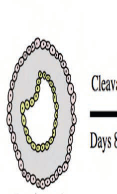<br><br><br><br><br><br><br><br><br><br>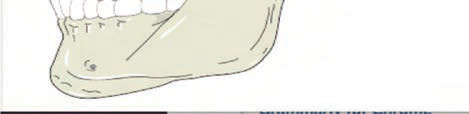<br><br><br><br><br><br><br><br><br><br><div class=''>a) ç  </div><div class=''>b) ‘  </div><div class='correct'>c) Œ  </div><div class=''>d) ’  </div><p><i> ‡  †                . ˆ ,   †    ...</i></p></div><div class='q'><p><b>Q15:</b>                   .                          ?                       ?   - -          .      ,             . Å          Å            .          ? 66             -‡           .             ?                    ?        ƒ ƒ        ? 150  ƒ                ? 167                    ______. 183                 -   ? Answer Key Question No. Correct Option 218 Detailed Explanations                    _____              ƒ   : -ˆ        -Å   ‡   -êƒ    -Å     Š-‡     .                    ?        ?                 ? 374                   ?        Å    Œ        Å        .    ’‘Ž    Å          . ‡     ÅÅ Å        Å  : 463 Answer Key Question No. Correct Option Detailed Explanations  ƒ          Å  ,       Å         . ‘ŒŒ            .      Å       Š ?           ,  ,    .                ? Answer Key Question No. Correct Option 507 Detailed Explanations  „       Š”- -                         .      …     ?           ? 560                     .                ?                        ?  645                †                  : Answer Key Question No. Correct Option 646 Detailed Explanations   ’ç--                .                     ‡   ?                 ?  Å êç--              . ‡   ,                          .                          ? 737  ê    ‘, ’      „ƒ  . ê                  ,     .                   ? 757 Answer Key Question No. Correct Option Detailed Explanations  Ž         ç- ,       '                  .                ?                   . ‚                .                  /    ?                  ? 849                    ? 896                            ? 918                   ?                    ?  ‹- -                         .                      . Œ       ■                      ?  „         “                ? Answer Key Question No. Correct Option 1026 Detailed Explanations                          ? 1044   Å„--           .             . ‹    ‡             . ‹ ê-   ,           .  ‡                     ?  ƒ     †  ’  ,                 ?   ‚             ______. 1113  ç Å   Å                   ?                      ?  “                ______ </p><br><br><br><br><br><br><br><br><br><br><br><div class=''>a)    </div><div class='correct'>b)    </div><div class=''>c) ‹    </div><div class=''>d) è </div><p><i>            .      –  . –     ...</i></p></div><div class='q'><p><b>Q16:</b>                   ? 8                ’ Ž ? Answer Key Question No. Correct Option 35 Detailed Explanations                .                .               ?              . ç                     .      ‡         ?                  ? 115   Œç- -           ņ         . †   ,          ƒ     . ‡              ƒ      ■       ƒ ?  Å- -     ‘‚‡‡ Å               . †           .                       ?         _____.                         ?  Å               . 292                            ?       êê--             ,                  .          .       „      ?                         ? 375 Answer Key Question No. Correct Option Detailed Explanations                      ?       Å           ’-   ?  „      …            : 529       Š ‘ ? 561              ,        ‡     .       -  ?  Ž                    Å    :                    ,    ,     ?              ? 708                     ? Answer Key Question No. Correct Option Detailed Explanations  ƒ   -        ,                         ?              “Å,               .               ?              ?  ’„- -                   . ‰Š      Š  .                      ?                  .   ,                ?   Å-  -                     . ’               ,   ‚   …. „                  ? 946  ‚ …‡-  -           ’       “         . Å   ,              .        ‹  ”ç/Œç  ƒ . ‚              .                    ?                     ?                          ? 1045                   ‡ ?  “ ’                ?   ‡ç- -         ,              ‚ . è             .  Å                :     Å        ?  ‘                      .                       ,        ’  .     _______ 1174 Answer Key Question No. Correct Option Detailed Explanations           ,               .           ” ‚             : 1190 </p><br><br><br><br><br><br><br><br><div class=''>a) è  </div><div class=''>b)  </div><div class=''>c) ƒ ê</div><div class='correct'>d)  </div><p><i>              .       (   /   ) ...</i></p></div><div class='q'><p><b>Q17:</b>  è ‹Š--            - † . 燗      „          ”   „         .         .      ■          ?   ’- -         ‰è           . ‰ …                      .              ? 67  91          . …  ê-       - --   .                 ‡       ?                       ?              „           ?      …     :  Ń       ______.                           ? 266  „               ‡                 _____ Answer Key Question No. Correct Option 293 Detailed Explanations  Å                  -     .            ˆ                  _______.               ? 347 Answer Key Question No. Correct Option Detailed Explanations  441  †‡--        ‹      ,  ,    . ‰ ƒ      .         ?      Å                 ,   Å                .              Å  ?                        ?  ”    ,      . ”                  . Å      ê         ?  606             : Answer Key Question No. Correct Option Detailed Explanations  Œ           ,               ? 623   “”--                . ‰               ?                 .                   ?                     ? 774  ê                             ‡   .                 ?           ?                  ? Answer Key Question No. Correct Option 897 Detailed Explanations  • ’           ,                   .                      ? 919                            ”?                       ?                   ?    …  '  ?         ‹†…                     . ‹   ,                   1064        .             ?             ? 1092                      ?     Å    Å  ?                   ? </p><br><br><br><br><br><div class=''>a)  </div><div class=''>b) •  </div><div class='correct'>c) ƒ  </div><div class=''>d) –  </div><p><i> 16                      ˆˆ....</i></p></div><div class='q'><p><b>Q18:</b>  ˆ     † ,             ______                 ,      .                         ? d)            .           ‡    ?                  ?        ƒ Š       „        ? Answer Key Question No. Correct Option 151 Detailed Explanations              ?            ?                  .                            ? 310               ?  478 ƒ         Å  Å       Å  .      Å       ?                     .        .                         ?  „        ______            ?  671                          ‡ . •    ,             .             ?                  ,        Å ? 709                  ‚ ?  819                     ‡ _____  ”                ,   ?                         ’    ?                   ?  ‚ ‡Œ-          ,   ,   ,     . ‘                            977  . ‚-„…Œ    .             ?                         ? 1002  ‰  '                ? Answer Key Question No. Correct Option 1046 Detailed Explanations                     :                    ?                        ?                  è   Å  ? 1147                -    ? </p><br><br><br><br>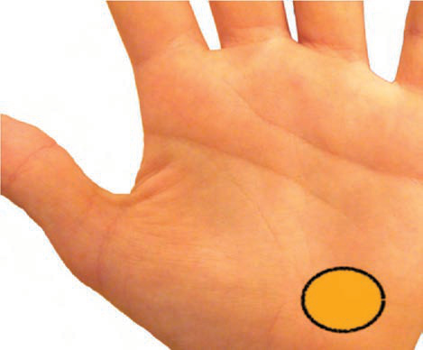<br>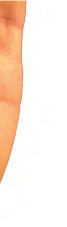<br><br><br><br><div class=''>a)        </div><div class=''>b) “      </div><div class=''>c)            </div><div class='correct'>d)        </div><p><i> ˆ     † ,            ‰  ..,  .      ...</i></p></div><div class='q'><p><b>Q19:</b>       : Answer Key Question No. Correct Option 9 Detailed Explanations                 ________.         ______‡   . 92   “”- -            .        ,          .                   ?                               ? 168 Answer Key Question No. Correct Option Detailed Explanations              ? 184                        ?  Å ‘Œ- -                      ‹        . •    ‡    .       ˆ     ˆ             '   .                 ‹ ?  ƒ       ‹   : 442       Å              ?             ,           .            ?   •…- -           .        ,       Š               Š. Å-               . „     ê                ?       Å        :   ”--    ÅŽ, Å–     ‡      . †             ?             : 710  ƒ            ,                   ?   ‹‹-  -         . ê                   .                    ?   …ç--                 . “            ,          .                        ■? 850             . c)                     ? 947                      ?                    .                  ?                 ?            ‡        ?                              ? 1114 Answer Key Question No. Correct Option Detailed Explanations  ç Å   Å     ç     ?          ______ </p><br><br><br><br><br><br><div class=''>a) — </div><div class='correct'>b) ‹ </div><div class=''>c) — </div><div class=''>d) ‹ </div><p><i>         .                     ...</i></p></div><div class='q'><p><b>Q20:</b>           ______________ 68            :                    ? 116                ? a)                  . 267                      ‡? 311         è    ? Answer Key Question No. Correct Option 443 Detailed Explanations  ƒ  -     Å   Å     .        ? 479  ŠŒ- -                 ƒ     „ . „                             .              ƒ ? 530  562 ”               . Å               †'   ,         ?  ˆ                     .                .     ,               .                  ? 624  —                   -‰  .                        ?               猆 Å    ƒ† Å .       ?  775  †- -               . Š ç-                 .            ‚           ?               ‡ : 820  “                  ?                 ? 920                ?                              ?  Œ                           ' ? Answer Key Question No. Correct Option 1003 Detailed Explanations      ‡                  .     ‡         ? 1065   ˆ‰-  -           ‡            . –                . ƒ       ,   ‡             ?  ”       : 1148                         .                              ? 1191 Answer Key Question No. Correct Option Detailed Explanations </p><br><br><br><div class=''>a) ‰   </div><div class=''>b) </div><div class=''>c) —   </div><div class='correct'>d) — ‚ </div><p><i>                  .        ...</i></p></div></div><div class='chapter'><h2>Skin, Connective Tissue and Ligaments</h2><div class='q'><p><b>Q1:</b>                    ?             -       ?                ?                 .                   ?               ?                ?                       ?           ?           ?           ■     ?                   _____.              ?             .        ________                .                     ?   --                   .           .              ■ .              ?                      .               ?              ?                _______.   --             .       .              ?             .                .             .          :             _________.   --                  .            ?                        ?           ?                        ?                         .              ?                        ?                          .              ?            /         / ?            ?                    ?              ?   --                   .            .        ?                   ?   --                       .               .              .           ?   --                     .     ,        .             ?                      ?            ?             ?                                ________              ?                     ?               .                      ?               ?                         ________.                      ?               ''        ?                  .                  ?               ?              .    - -                        . -            .                   ?            ?                  ?                  ?                      ?                      ?                          ______  ______, .                    ?         _________                    ? </p><br>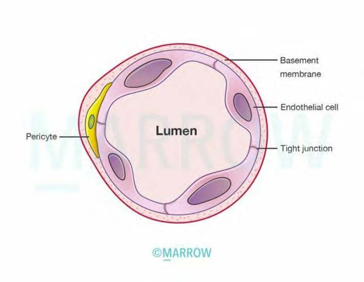<br><br><br><br><br><br><br><br><br><br>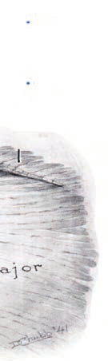<br>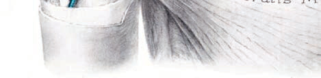<br><br><br><br><br><br><br><br><br>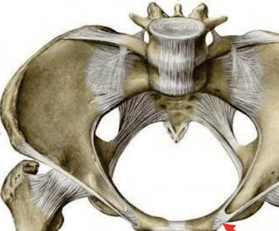<br><br><br><br><div class=''>a) ---</div><div class='correct'>b) ---</div><div class=''>c) ---</div><div class=''>d) ---</div><p><i>           ,         .      ( ”) ...</i></p></div><div class='q'><p><b>Q2:</b>                     ?            ?           ()      ?                             ,   ? 46                      ?                 .                   ?        ?                   ______                 ?                        ?                   ?      -             ?                   ?               ___________                      ?                       ?                   ?                 ? 341              _______.                 ? 368                ?                   ?                   -       .       -    .            .                            :    --                         .               .            ?                       .         ? d)        ?               ,         ?               ? 521                  ?             .                               . Å                   ?               ?             ?             .        ,                      .                 ?                       ?                   Å ,  :                     ?                   ?                         .      ,  '           .              ? a) b) c)                 ?                :              ?                    ?             ,                    .               ? 861                      ? 878                 :    --                    '    , ,   .                ?               .                          ?                    ?                    ?                        ?          :           ,  ,                .         .          '   ?                          :              ? c) d)     Å       ?                ?                       ?            -      ? </p><div class=''>a)     </div><div class=''>b)    </div><div class=''>c)    </div><div class='correct'>d)   </div><p><i>             ,              ( ...</i></p></div><div class='q'><p><b>Q3:</b>           ƒ         „    ?                    ?                    ?                 ?                      :              ?                ?              ?                   ?             ?        ,             _______.                        ?   --  Å          Å    -      Å          , ,     . ‚ Å Å  Å ,    Å                    .          ? 230  246                  ?                       .                     .                               ?  286 Å                           ?                                         :   „--            , ,   .                  .                   .                          _______.      '  ?              Å‚    .                ? 369   '     ?               .             ? 392        - -                                . Å       ‚   ?  422                Å  . ‚    ,                    ?                 . Å    ,         . ‚             . ƒ        ______. 434  459  - -       Å      . ‚            ?      Å            Å ,                .         :                ?         ,                 . a) b) 522 c)                       .                   ?                  ‚ ______. 582  Å           ‚ '   ?                 ? 601                    ?  641                                    .               ?                     ?  666                  ?   ‚--                Å    .            Å           .     ,                      .            Å ?  Å                         . ‚ ,             -  . Å                   ?                ?                .                   ‚       ? 769                          ‚-       .            ƒ      ?                         .       ? 806 a) b) c)                     .                 .               ?  845              ?   ƒ„--                         .                             . …              ? 862                ? 879             .                  .                       .             ?  913   -            ?  940                 :  972                   ?                 ? 997   ‚         ƒ                               .                 ?   - -                              . Å          . ‚ƒ            „       .        ■        ?                           .           ? 1060 a) b)                    ?                     ?          '   -  '     ?     Å      ?                   ?               _______                  ? </p><br><br><br><br><br><br><br><br><br><br><div class=''>a)         </div><div class='correct'>b) Å‚       </div><div class=''>c) Å‚         </div><div class=''>d) Å‚        </div><p><i> è        ƒ         „          †. ç ...</i></p></div><div class='q'><p><b>Q4:</b>  …             †      ? 5  ‚    ,                 ƒ: 19                      ,           . 30                 ? 47   - -                      .                 .  Å              ■             .                     ? 63                   ? 87                      ? 111  - -                     .               ? 132   ‚- -        ƒ  „  ƒ         ƒ     .       ƒ ƒ         ? 146                            . 164                  ______ 179                  ? 213     Å           ƒ. 231                       .                    ? 262  ‚ ƒ                 . „    …       _______                                ? 306               ‚   ? 327                        . …     ,          ,             .              „ ? 342           ? 361          ''    ?   ‚ƒ--              . „  ,          .            ? 385                 ?  „              : 404  „                 …? 423                     ?  „       Å         ?       Å       Å     ? 471   Å‚-  -                             ƒ.                     ? 501  Å- -                    . ‚   ,             ƒ . „        …              ?                       ? 556    ‚            ,  „       .             „  … ?   …--              †        . Å           ? 593                        ?            ,                ? 619   ƒ„--      …        .      †       .           …     ?                 ? 658                                    .                      … ?  703                   -       ?  Å ƒ„--       ,   ,        . Å                         .                     ? 733                      : 753         ?                       ? 792              ‚      ?                         : 815        Å-              . ‚      ƒ,            ?   ‡--                 . …       ,            . …        /    ?  Å       ,                     .            ?               Å ? 892  † †                   .        '        ?                      ?  ‚  -                 . Å   ,       ,         . ƒ                  ?  - -            -     . Å                     .                        ?  1022  … - -    ƒ              ƒ  .               ?   †‡- -               . ˆ             .               1040  ?   ƒ„--             . …  ,           . † -  ,                 .          ‡     ˆ?                               ? 1088                 ? 1110              ? 1127     Å      ? 1142                        ? 1170               ? 1187  ƒ  -            ,            . „  ,          .                      ? 1205 </p><br><br><br><br>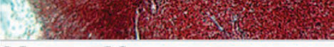<br><br><br><br><br><br><br><br><br><br><br><br><br><br><br><br><br><br><br><br><div class=''>a)   </div><div class=''>b)     </div><div class='correct'>c)  ‚  </div><div class=''>d) …</div><p><i> –    †         ‰    ˆ.           ...</i></p></div><div class='q'><p><b>Q5:</b>                   ?              ?                  ?       ƒ  , „,  Å,   ,          .               „    ,   …  ,        .                       ■           ?   --                        . †              ‡       ?                 ?          ?      „             ?  ƒ                „ ?                 _____________.              . ‚         ƒ.              .                              _____ 247                   ?           ,      ƒ      ‡       ,      . †    ‡                       …  ƒ  . Å      …. 287                    ?                       ?   ˆ   ‡†       .                         ?                        .          .             ?                   . Å‚            .                ? 370                        .               ?                  ____        _____. 393  …             - :   ˆ--     …-  .           …       ?  ƒ                    ? 435   Å  Å            :  ƒ †- -        .     Å               Å: 472   †‡-  -             . ˆ                            .                 ?                 . ˆ       …    .                     ? 523            .           „                         -     . ˆ ,            .            „  ‰ ? 583               --                 . Å                 ?                             ______. 602  ˆ ‚‰-  -                       .               ■    ?                 ?        †  ________              .                     ‡             .                    ?                ?  Å                     . Å              ,  :               ?       -                        .            ? 770                   .                    ….              ? 807   ƒ-  -                  . ‚       „                 . …-             .                    „ ?              ? 846                                . …        Š          ? 863                  ?       ,              ?                ? 914                             ? 941  ‚ †‡-  -                  . ˆ     ,       ‰                   -                  .               ‰ ? 973                    .  . 998        ƒ          ?                          :             ,      ‡        . 1061                         ‡            ?                     .     Å        ,    .    ‚    Å?  Å --             „           …  .               „ ?     Å       ■  ?               Å   ?    -                    ‚                  .                         ?             ? </p><br><br><br><br><br><br><br><br><br><br><br><br><br><br><br><br><br><br><br><br><div class=''>a)   </div><div class=''>b) † </div><div class=''>c) ‡  </div><div class='correct'>d)   </div><p><i>      ƒ    ‹          Œ       .  ...</i></p></div><div class='q'><p><b>Q6:</b>  …                ?                 ?              :         ƒ    ,   ,                  . 48                 '   ?   Š--     …             . ‹  ,         -                 .         . †                       ?                   ?                     .      : 133        ƒ          ?  ‡- -       ˆ‰              . †       Š     . ˆ ‹  ,  „    . ƒ               ?                                 ?                      ?                  Å  Å.                       ˆ. ‰   ,                   .                     ?                      ?  Å                ?                          ?               ‚  ? 328                    ?  Š  ƒ               ,       ƒ    ƒ      ƒ    .             ? 362                    ? 371                ? Answer Key Question No. Correct Option 386 Detailed Explanations   …†--       .             :                     . Å    ‚   ? 405            Å                   ….             ?   †‡--              , ,         ˆ  . ‰ ƒ     Š       . ƒ           :  „         Å     Å  ‡ˆ  ?           Å .                             ? 502             ƒ       ‰            .                    ?           Š             ?              ,                .              ?                   ˆ               . Å              ? 594                   ?                ˆ?                            .               ? 642   ‚‰--                  Š     .       ‹                .             †      ?                   ‰    .    ,                 .               ‡ ? 667  …      ,          ,   ,         . ƒ                ? 704                     ?               '       ƒ  ?                   .      ,             ?                    ?                  . ‰      …     Š   ,            ‹  …  .         Š   ?  †   -    ‡     ,          ,             . Å                   ? 816           ________                          ? 864  † ‡ˆ-  -             . ‰                 . †                    Š .          Š    ? 880  ƒ„- -         ,  ,     . …                   .             ‚       ?                ?                              ?                     -     ? a)                       ?  ˆ    ‰Š‹   -   ,                  ?                 , Œ,         ? 1041                     ?   ˆ‰-  -                          Š .                :                       .  - ,              .              Å?       ____________ „       ƒ       .     Å       ?            „       .            ?                     ? 1206 </p><br><br><br><br><br><br><br><br><br><br><br><br><br><br><br><div class=''>a)    </div><div class=''>b)  ‚  </div><div class=''>c) ˆ  </div><div class='correct'>d) ‰  </div><p><i>             ‹    . …   ‹    -   ...</i></p></div><div class='q'><p><b>Q7:</b>          ?  Š--              .    ,              ‹'   .         ‚†     ?  ƒ- -                         . „   ,            .                 ? 31                      ?   ‡- -                         . †  ˆ                    . ‰ Å  ,              .         : 64   Œ     -                     ?                         ?  Å- ‚-                   .       ?        ƒ                ?                         ?  180                  _____.               _________ 214  232              ƒ    ?  Š              .         ‹ 248   ‚ '     _____              -  ? 288                                     ?                       ?  343 †     ŒŒ--                     .         ?   …‹--                   .              ƒ  .            . Œ    .      ? 363 Answer Key Question No. Correct Option Detailed Explanations         -        „              ˆ.            ?                      ?  Å                 ?                    ? 424                           . ‚               .            ?  460 Š    Å   Å     . ‡   ‹ Å   Œ      Å     ?  ƒ      Å   Å-         ÅÅ     Å    ˆ '  .      Å       Å             ? 473  ‹                        .                     ?                              .               ? 524 d)  557      Š   Š          . ç    Š         ,             . Å                   :                   .            „       ?  Å    Š     ?             ,  ,          .         ƒ     Å     .                     ?  620           Å       ?                      ?   ç„--             ŽŒè           .    †        ? 659 Answer Key Question No. Correct Option Detailed Explanations                    ?                     ?                      ? 734  … †--  ‡      ,    ,  ,        .   ˆ-            ‰         .           ?                  ?  Œ--            . ˆ                  . „    ,               ç?               ‚ ?                      ?                       .                   .                           ?       ,                   ?  Å      . a) b) d)               ?  † †       ‚-             è    .    . 915                       ? 942  ‚ Œç-  -                   ,       . Å   ,    -   .        .                ? 974             .                    ?                          . „                       ? a) 1023   ç- -                 ■                . ‚ƒ                  '   '.               ?                   ?                ‡  Š . „   ,                .          ‡      ?                           .          .                 ?  Å                               .        ?     Å         ?                      ? 1171             ?  „ Š          ,                  ‚ .          ‚       ‚       ? </p><br><br>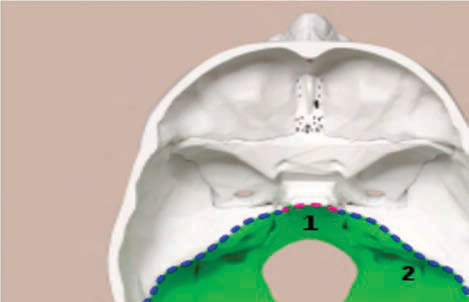<br><br>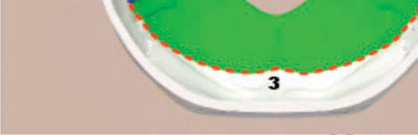<br><br><br><br><br><br>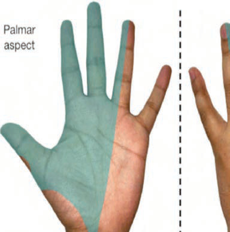<br><br><br><br>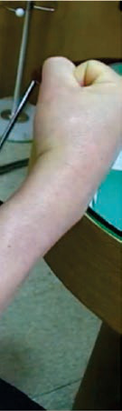<br>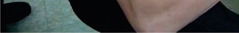<br><br><br><br><br>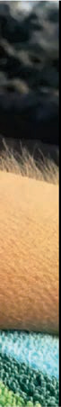<br><br><div class=''>a)        </div><div class='correct'>b)       </div><div class=''>c)    Š         ,         </div><div class=''>d)    Š         ,        </div><p><i> ‡       .    †                   ...</i></p></div><div class='q'><p><b>Q8:</b>                   ? 6                ? 20                     .              ?                             ? 49              ?  88                     ?                   ? 112                       .        ƒ         ? 147  Œ- -             ç        .              . ‰  ,          -                      . 165 ƒ    ?               ?                 ?           Å         ?          ‰ƒ- ç                                       .               ?                                         . Å                .                 ? 263  Å      …  ƒ          .                            ( Å)   ? 307    ‚ '    ? 329  ‚       ______.                ____________.  ƒ            .         ‚                   .               .       ‚   ?                         ‚‰ Š   Å     : 425  436                       .               ‹          . „  ,            . ƒ          ?   Å  Å                  :       Å  Å    Å    Å?                    ?               ƒ         ƒ   ?         ,       Š         '  ?  ‹Œ- -      „                 .   „   ç   .             „ ?   --               . ‡           . ņ                   ■?  „   …            ,             . „          . „                 '  '.       603              ?  ˆ „…-  -             .                 . ˆ  ,          .                Å  ?   ƒ--                 .           '  …     .              : 643                      ‡    ?   ‚‡--     Å           . ˆ       ‚‰ Š           . ˆ                     .              Å ?               : 735              ‡        ? 754                      ‚.                ?                        ? 793  808                            .              .         ‚   Š  ç , …:        ˆ‰     ,                 .     ,       .                 ?         Ž         .                            ?  …             Œ     ?                    ? 881                           ? 893   ‘‰--             .                      .                    ?                                 ? 943        ê              ‰  ?                 ? 999            ?   †Œ- -                     .              ? 1042                  ˆ ?  1089 ƒ   ,                ,           .                  ?  1111                       .   ‚             .               .   ,           Å     .      ‚         Å ?  Å ‡‡--                   „        .         „     ? 1128  Œ  - -      ‚ŠŽ Å    Å  Å        . Œ è-    Å .    Å          ? 1143                            ?  Š                ? 1188                 ? </p>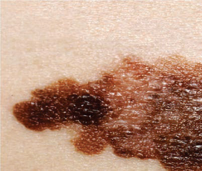<br>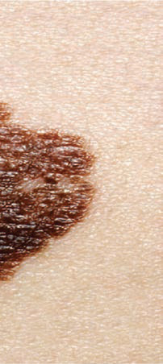<br>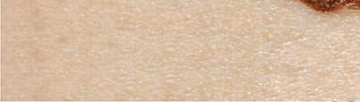<br><br><br><br><br><br><br><br><br><br><br><br><br><br><br><br><br><div class=''>a) ƒ          </div><div class=''>b) ‹        ‚    </div><div class='correct'>c) ƒ          </div><div class=''>d) ‹     ‚   ‚</div><p><i>      ( ”)           . è  , ”     ...</i></p></div><div class='q'><p><b>Q9:</b>                ?                ?  Ň- -              . ˆ                   ? 32  ‰ ‹,       ,           _____________                        Ž?                ?                  . ‹          .          ■ ?  †      ,                   ‚. †           .                   ‚        ? 134                  ?           :            ?  ‚           : 215   ê‘--         Å        . ‚ Å         ’-              -Å“       Å   .                  Å?                . 249                  ƒ   ?  ‚ ƒ                  . Å      …. 289                  ?                      ‚   .              ?  †       ''     . 344  ‰       ,                .                 ?                .                   Å? 394       Š  ‹Œ,ŒŒŒ „  ‚      -       . ç                      .    :     Å   „Œ -çŽ               ‰ . Œ …   ,      Å.         ?  ƒ               :      è - -                  . „  Å      Œ   ÅÅ ? 461  ƒ      Å        Š           ‹ .      Å     ?  503                   ?                      .      ? 525            ?      -                .           „        ? 584  Å                   ? 595 Answer Key Question No. Correct Option Detailed Explanations               ?  ˆ ‚‹-  -             Å          . Å                  :                             ?   çŽ--                     .                   ? 668  705                Å ?  Å                     . Š    ,      Å  '         . ‚ ,         .      ?                  ‡.     ‡ … ? 755   „Å- -        , ,   . Š ç-              . Š                   .            ‚         ? 771                              . ê ƒ   ,                   . ˆ            .            ?              … ____ Answer Key Question No. Correct Option Detailed Explanations           ?                      . ‚              -    . ‚         ƒ            ? 847  865 …                       ?  † ç-  -         . Ž    ,                          ƒ .             ƒ ?             .              ? 916                       ?                ?  †                 ,               .      ■         ?                   ?             ?                   ˆ ? 1062  „     ‡                 .                    :    '         ?  Š‹ˆ   Œ‡--           ƒ  .               ?     Å      ‹ '    ?  ˆ ‰Š--                                    .   -            ______ 1172           ,        Œ  ç         Š        ______ 1207 </p>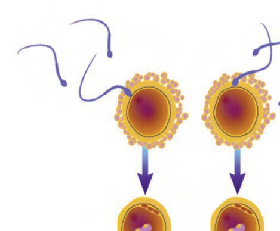<br><br>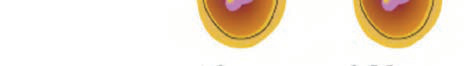<br><br><br><br><br><br><br><br><br><br><br><br>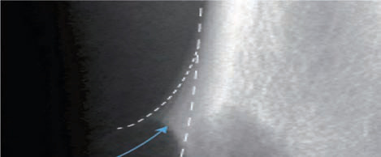<br><br><br>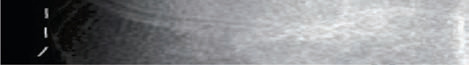<br><div class=''>a) Ž ‚</div><div class=''>b) ˆ</div><div class='correct'>c) ‡  </div><div class=''>d) Å ‚</div><p><i> ‡            . …         ,    ...</i></p></div><div class='q'><p><b>Q10:</b>           †                   ?           -      ,           .                ?  Œ  ç         Ž ƒ  ,       .                   ? 50  è   ,          . -,                   .          ?          ?                    ‹ -      Ž-   .                  ……-                ?                    :       „   :    ,                ƒ    ?           _____  .               Š          ?  „               .      ’    . 233  Š             .         ‹. 250  èê--                , -          .                                  .                        ? 264  ‰        :  Å …†- -         ‡         .  ˆ  ,    ˆ   .                    _______     .   „--          ■  . …                     .          ‚     ?                     . †          .        -     ,          . Å‚                        .          ? 372           †  ,         . ‰ ,            Å   .                ?              .   ‚              ? 406            ….   Å                    .           ?   †‡--         .                   : 437   è- -        . ê    ,        ‹     Å   . ‡     ‹          Å        . „   Œ   ÅÅ ?              Å          Å . 474  ‹     -        ŽÅ-  -            .    ,           . ‹    „   .                 ?  ŠŒ- -      ‚   ‚        -  è . ‚       ,        .            Ž    ? 526     '    †  ê     Š     .                ? 558  ’             “ƒŠ    .                     ? 585  ‰   ,         .                    ? 604          ,              ? 621                           ?  Š       ''   :              :  Å ƒŒ--    -                    . Å          .                   :                     ?             .            ‚     ?                : 794          ç        çŽ .     ç ,                    ‡: 817          ?  …                        ?                       ? 882                    ? 894              ?                               ? 944                 ?                ,                …  '  .                     ?        -   ,                       ‰Š‹?                    ?                ?                       ?   ‡ˆ     ‚         ‰       ‰     .             ‚   .            ‚          ‚ ?  Å Œ--  ‚        ƒ              . ç             ƒ.                    ?     Å            ? 1144               ?                             ?           -‚      Š   Š      ? </p><br><br><br><br><br><br><br><br>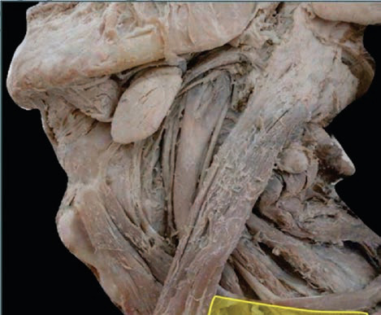<br>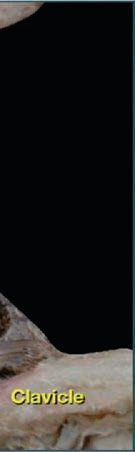<br>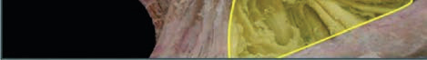<br><br><br><br><br><br><br><br>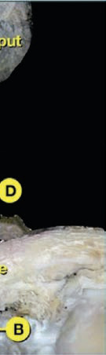<br><br><br><br><div class=''>a)   </div><div class=''>b) ‹  </div><div class=''>c) ˆ </div><div class='correct'>d)   ‚  </div><p><i> ˆ                . ˆ      ˆ    ...</i></p></div><div class='q'><p><b>Q11:</b>                   ?  ‘                   ?           ____________. c) d)                        .    . 51                 ? 65           _________                 .          .                     ? 113                    .        . ˆ      .                              ?        ƒ          Š  ƒ       ? 148    ,                      ?  181                                    ?  ‚             Œ   ? 216   †--   Å       - -       Å , Å    ,  ,   ”  Å .        Å         . „         Å  .         ƒ. 234                             _____ Answer Key Question No. Correct Option Detailed Explanations                       ?   ç--          Ž‰         .                   . ‚ ƒ                 . Å      è    290  Å Œç- -         .                                              ‹  .       ˆ      ‡      Ž?                 ç        . Œ Š   ,         -      . Œ 330  ,          .                   ? Answer Key Question No. Correct Option Detailed Explanations         ?                     . Å‚       .    ()            ?             ? 395           ‚       ? 407  ‚‰ Š          _______          ,    , -  ‰ '                 .                     'ç'? 438  Ž  Å     Œ ""     Å     .         Å  Å     . 475                ? 504                   ?  ƒ       Š ‘    ____     „    „             ____.                 ‰ˆ         . ‰  ,                  .            ?                 Å            ?                 ?                           ‡    ? 669               ? 706                         ?                               _______ 756                         .  ‚     ,           .                     ? 772                    ƒ :                  ?   †ç--        ,  ,     . „‚-     ■            . ‚                   ?                         Š   . ê                   .         Š  . …               ?       Š    -            ? Answer Key Question No. Correct Option Detailed Explanations               .           ‚      ?  ”                 . †                  .             ?                  ?                       ? 975                   ?                         ? 1024                 '      '  ?                    :   ‚‰-  -                   ,     . è     ‡       . ƒ Š            ‡    ? 1090                           ? 1112  Å          ƒ        . † ‚  ,                    .          ƒ    ? 1129                    ____   ?                  .                     ?                 ? </p><br>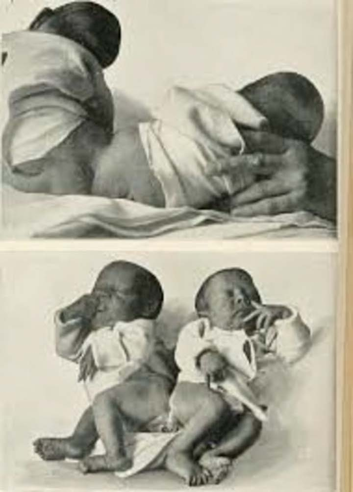<br><br><br><br><br><br><br><br><br><br><br><br><br><br><br><br><br><div class=''>a)          ‚</div><div class=''>b) ‡            </div><div class=''>c) ‹Š            è </div><div class='correct'>d) ‡        </div><p><i> ‡                      † . ˆ    ...</i></p></div><div class='q'><p><b>Q12:</b>  ‡         ƒ      ? 7     ‡ ’     ? 21               ? 33             ƒ           .  ç        .           .           :  89 ‚‡      ______  è                  .                     ? 114                    ?  †            ƒ.  166 - -                       .     ,         .          ?             …     ?                            ?                        ?                          ?                ?  308 Å ‘’- -                       . Å                   .             ‹    ?   ˆ--                          .                 345                      . †                  ?   Š‹- -            . Œ„      , „       .                ? 373      -                                             .      .               ? Answer Key Question No. Correct Option 396 Detailed Explanations  Å                    -       ?  426                Å Å           .            Å Å      …:                ?  462  ç‰- -       Å      Å   . ’‘Ž    Å  ÅÅ         ‡-…   Å     . „            ?  ƒ - -       çŽ    Å     Å    .  ‹-   .      Å        Å   ?                ,       .              ?  ŒŠ- -          . ˆ                   „‡ç.              .                    ? 527             ê          ?             ? Answer Key Question No. Correct Option 586 Detailed Explanations                        ?  ˆ            ________               . Œ   '    .           …   ? 644                    ç ,                   .                     ‡      ‘  ?               ?  736 è                               . …            ?  ‚                       --     ?                ?            ’ '       -     .          ,            .                 ?   ƒ-  -              . †     ,                          . Å    .                     ?                      .      Š   . 866 Answer Key Question No. Correct Option 867 Detailed Explanations                 -    . ‰…                Š          ˆ .              ?  917  ‘ --          . Å ,   ,               .                          ?                     ? 945                       ?  1000                        ( )    ?                   ƒ  “          ƒ . ‡                  ƒ     ?   è†- -             . ƒ                    ? 1043   ‚„--            ‡     ‡      . çŽ            . Š             ‡          ?          :                   .       ‚                       .             ?                    ’  -“é  .       ?      Å    ,        è-            è    .    Å            ? 1145   ‘      ’             __________   Œç--                 .          „        .  Ž         .              ? 1189  Œ    ê            _______ 1208 </p><br><br><br><br><br><br><br><br><br><br><br><br><br><br><br><br><br><div class=''>a) ‡  </div><div class=''>b) Œ </div><div class=''>c)   </div><div class='correct'>d) …  </div><p><i> ‡         ƒ  ’ . ‡             ...</i></p></div><div class='q'><p><b>Q13:</b>                 ?       ƒ           ? Answer Key Question No. Correct Option Detailed Explanations           ‰Š              . ˆ                       ____________.   “è- -                   .                ƒ.              Š†  ,           ”       ? 52                 ?                   ?                   ?  135          ?  †         ƒ. 149                    ?         ________  .  ˆ           ______                Ž–  ? Answer Key Question No. Correct Option 235 Detailed Explanations      ‹               ______  Å              .          ˆ       ‡   ?                ?  ‚              :             ,      Š . Ž                 . Å    ‚   ?      ‰             ?  ƒ                : 439  „ Å  Å                  ?  ƒ   Å               Å    Å.      Å           Å      Å.        Š  Å ? 476   ‡-  -                       .          ? 505                   :   ‡’- -                         . Å           ,       .             ? 559               ? 605                ?                  …            ?           ‡                                ?                      : 707  Å                .              ?        ƒ       ?                    ? 773  795 „        -       . Answer Key Question No. Correct Option 796 Detailed Explanations  ‚                ?                       ? 848  ‹„- -        , Š     . Œ Š   ,       Åç '     -     .   895            .         ?  ‚           ’:   Š-  -         ,   ,  ,   . ‹ , Œ  çŠ/ŠŠ  Ž . „         è      .      ?                  ?                       ?  „               ? d) 1025            ■‹ ’                 .                ?             ˆ             .            ‡     ˆ? 1063   ‚‘-  -               . è              ‡  . „   ,                            .           ‡     ? 1091                   ?  ”   ƒ               .                    ?  '          ,  '.    Å    Å?  ‹                ? 1173                   ?  Œ   ‚ ‚   ‚                      _______ Answer Key Question No. Correct Option 1209 Detailed Explanations </p><br><br><br><br><br><br><br><br><br><br><br><br><div class=''>a) ‡  </div><div class=''>b)    ‚ </div><div class='correct'>c) ˆ</div><div class=''>d) Ž </div><p><i>                 .       :  ...</i></p></div></div></body></html>